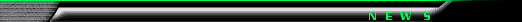
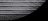
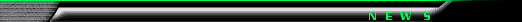
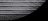
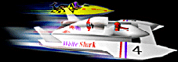

  |
|
|
|

News of the month 11/16/99: Snap It! 1.1 is released.
Older news 10/24/99: Vertigo Software and French Touch present an exclusive set of 3D models downloadable for free use with Fusion. 9/21/99: Fusion 3.1 released, followed by updates of all major French Touch products. French Touch also presents a new 3D tool called Rasterizer. 8/29/99: WaterRace Terrain Builder 0.9, the real-time terrain editor for WaterRace was sent to the beta-testers. 8/21/99: Fusion 3.0, the ultimate update of Fusion is released. D-Fusion and Chronos are both updated to version 1.1. 8/07/99: Movies of WaterRace in action are available on the WaterRace web site. 8/05/99: French Touch releases 3 new products: Fusion 2.5, D-Fusion 1.0 and Chronos 1.0 all based on the Infinity 3D Engine. 7/18/99: Snap It! 1.0, the definitive screen capture tool for MacOS is released. 7/16/99: French Touch will be showcasing WaterRace during the Game conference at Apple Expo 99, Paris. 7/08/99: French Touch's manager Pierre-Olivier Latour was interviewed by the Mac Game Gate. 6/27/99: WaterRace DR6 was sent to beta-testers. 6/20/99: Fusion 2.0 is officially released. 5/03/99: New screenshots of WaterRace DR5 posted on the WaterRace web site. 5/12/99: WaterRace DR5 was internally released. 4/28/99: Fusion 2.0b3, the latest beta of the revolutionnary update of Fusion was sent to the beta-testers. 4/05/99: Fusion 2.0, the brand new and revolutionnary update of Fusion is available for beta-testing. 3/27/99: Fusion 1.3 our custom 3D editor is finally available for download. 3/02/99: Fusion 1.3 was sent to beta-testers. Fusion should be GM very soon! 1/25/99: WaterRace DR3 is out. 1/18/99: French Touch web site is officially open!
12/8/98 : new artwork posted on the Lords of Steel web site. 12/5/98 : French Touch web site is created. It is not complete yet, we'll try to update it very often, so keep visiting us once a week! 11/29/98 : WaterRace DR1 is out. 11/14/98 : Fusion 1.0 is released (internal use only). |
[News | Products | Support | Press | Beta-testing | Map Makers | Inside French Touch]